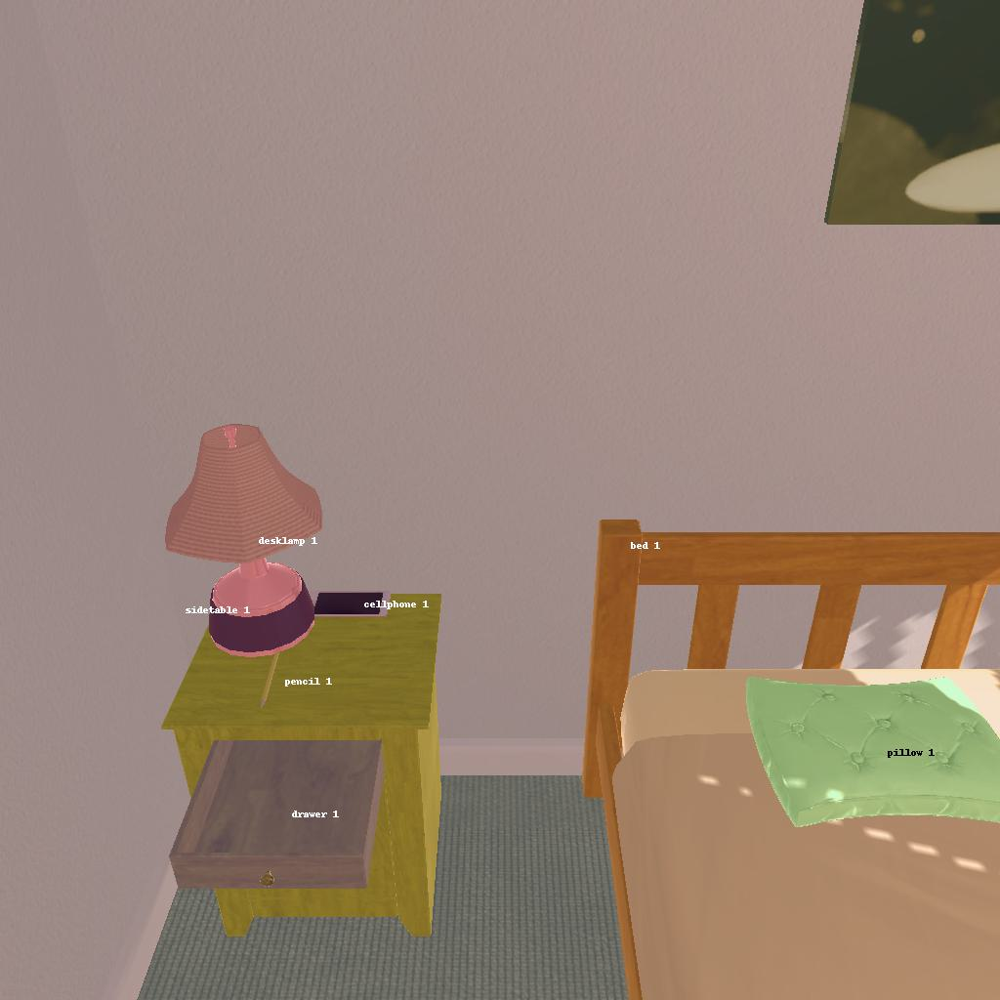
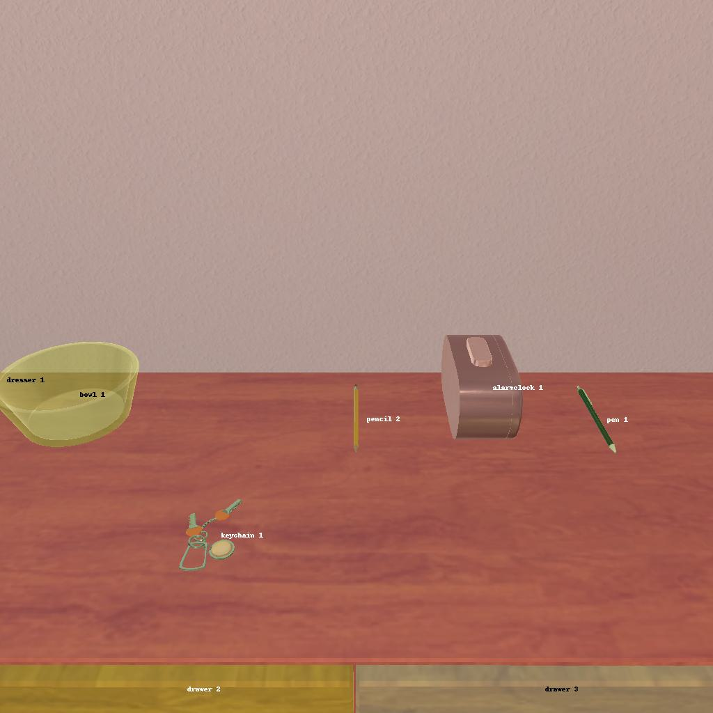
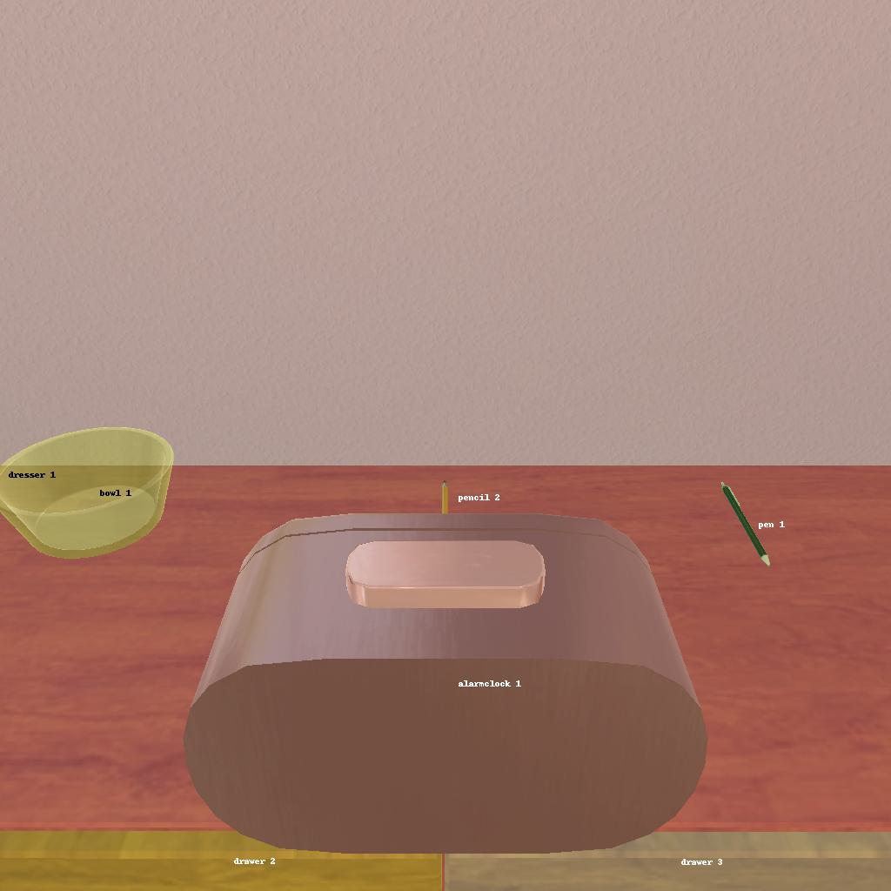

---------------------------------------------------------task: 0---------------------------------------------------------
--------------------------------------------------------------------------------------------------------------------------------------------------------------------
--------------------------------------------------------------------------------------------------------------------------------------------------------------------
Step:--------------------------------------------------------------------------9-------------------------------------------------------------------------------
----------------------------------------
VLM Prompt:
Image1:
Image2:
Image3:
**Instruction**
1. Analyze the provided image to identify all visible household objects, focusing on those relevant to the task description "examine the alarmclock with the desklamp."
2. Use the analysis of the image and the task hint "The agent must find an object of the desired type, locate and turn on a light source with the desired object in-hand." to answer the question: what is the most reasonable action in the choices for the task description "examine the alarmclock with the desklamp"?
4. Decide and write the answer using the template: The answer is: (i): , where i is the real number. If there is no desired object in the image, search every place based on **Initial Observation** to find the object. And if no one is exactly correct, choose a similar answer.
**Initial Observation**
You are in the middle of a room. Looking quickly around you, you can see bed (1), sidetable (1), drawer (1-11), dresser (1), safe (1), laundryhamper (1), garbagecan (1)
**Answer Choices**
(1): go to bed 1
(2): go to sidetable 1
(3): go to drawer 1
(4): go to drawer 2
(5): go to drawer 3
(6): go to drawer 4
(7): go to drawer 5
(8): go to drawer 6
(9): go to drawer 7
(10): go to drawer 8
(11): go to drawer 9
(12): go to drawer 10
(13): go to drawer 11
(14): go to safe 1
(15): go to laundryhamper 1
(16): go to garbagecan 1
(17): put alarmclock 1 in/on dresser 1
(18): examine alarmclock 1
(19): examine dresser 1
**Answer**
Let's think step by step by following the instructions.
----------------------------------------
----------------------------------------
Original Response:
Firstly, we need to identify all visible household objects in the provided images. In Image 1, we can see a bed (bed 1), a sidetable (sidetable 1) with a desklamp (desklamp 1), a cellphone (cellphone 1), a pencil (pencil 1), and a drawer (drawer 1). In Image 2 and Image 3, we see a dresser (dresser 1) with a bowl (bowl 1), a keychain (keychain 1), a pencil (pencil 2), a pen (pen 1), and an alarmclock (alarmclock 1).
The task description "examine the alarmclock with the desklamp" suggests that the agent must find the alarmclock and examine it under the light of the desklamp. From the images, we can see that the alarmclock (alarmclock 1) is on the dresser (dresser 1), and the desklamp (desklamp 1) is on the sidetable (sidetable 1) next to the bed (bed 1).
The task hint indicates that the agent must locate and turn on a light source with the desired object in-hand. The most reasonable action to fulfill this task is to first go to the dresser to get the alarmclock and then go to the sidetable to use the desklamp for examining the alarmclock.
Since the options provided do not include a specific action of picking up the alarmclock or turning on the desklamp, we must choose the closest action to start the task, which is to go to the location of the alarmclock.
The answer is: (4): go to drawer 2. (As dresser is often referred to as a drawer as well, and it's the closest action to get the alarmclock from dresser 1).
----------------------------------------
----------------------------------------
>>> Refine Original VLM Response and Get Pure Action: go to drawer 2
----------------------------------------
-----------------------------------------------------------------
Running time: 16.90788960456848 seconds
Total Money: 0.33077
-----------------------------------------------------------------
-----------------------------------------------------------------
Text Observation:You arrive at loc 4. The drawer 2 is closed.
-----------------------------------------------------------------
UNSUCCEED